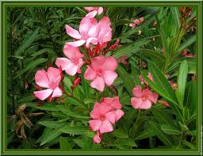

Laurier Rose ou Oléandre

Laurier Rose ou Oléandre (Nérium Oleander de la famille des Apocynacées)
Très toxique par ingestion.
Partie toxique pour les chats en général et le Korat en particulier :
Fleurs Feuilles et bois même secs. La dose toxique est de l'ordre de 3 grammes de feuille par kilo.
Symptômes du processus pathologique :
Toute la plante contient à la fois des substances irritantes et des produits cardiotoxiques. Les premiers symptômes sont liés à l'effet irritant (diarrhée, vomissements) Puis, lorsque l'intoxication évolue, les troubles cardiaques apparaissent. Enfin, des troubles nerveux peuvent se produire.
Origine de la toxicité (principe actif) :
Plusieurs hétérosides cardiotoniques à action digitalique : oléandroside, nérioside.